موکآپ فاز ۱ — برای بازبینی
سامانه حواله خودرو
این کاتالوگ همهی صفحههای موکآپ است، با توضیح اینکه هر صفحه چه کار میکند و در آن دنبال چه چیزی باشید.
هنوز کدی نوشته نشده — این فقط ظاهر و جریان کار است تا قبل از شروع ساخت، ایرادها را بگیریم.
صفحهها: ۲۸ نما
دستهها: ورود، پنل نمایندگی، پنل مدیریت
داده: نمونه — واقعی نیست
وضعیت: در انتظار نظر شما
سامانه در یک نگاه
- مسئلهای که حل میکند: نمایندگیهایی که حوالهی خودرو دارند و نمایندگیهایی که دنبال حوالهاند، همدیگر را پیدا نمیکنند. این سامانه آنها را به هم وصل میکند.
- مدل درآمد: اشتراک ماهیانهی نمایندگی. نمایندهی بزرگ میتواند برای زیرمجموعههایش هم ظرفیت بخرد.
- هستهی اصلی: اطلاعات تماس صاحب حواله مخفی است. نمایندهی دارای اشتراک با یک کلیک آن را باز میکند و همان لحظه ثبت میشود که چه کسی چه آگهیای را دیده.
- دو پنل: «نمایندگیها» برای مشتریها، و «مدیریت» برای خودمان.
ورود به سامانه ۳ صفحه
۱ ورود — مرحله اول
نام کاربری و رمز. ثبتنام عمومی وجود ندارد — حساب فقط توسط ما ساخته میشود.
دقت کنید: پایین کادر نوشته «هر حساب همزمان فقط یک نشست فعال دارد». اگر کسی رمزش را به دوستش بدهد، هر بار که یکی وارد شود آن یکی بیرون میافتد.
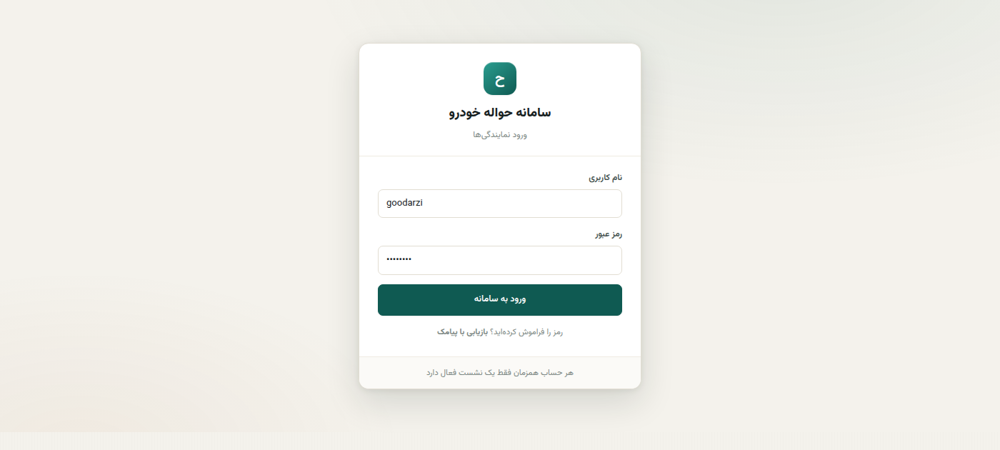
۲ ورود — کد پیامکی
کد ۶ رقمی، اعتبار ۲ دقیقه، حداکثر ۵ تلاش. تا خرید پنل پیامک این مرحله خاموش میماند و با یک کلید در تنظیمات روشن میشود.
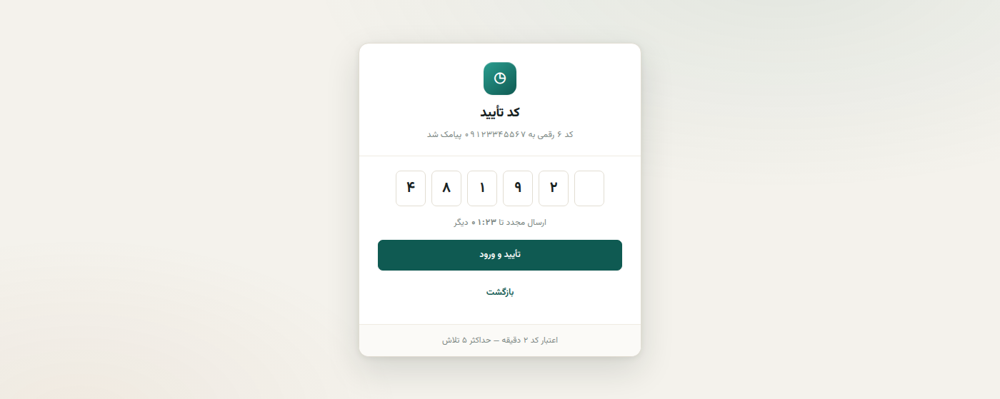
۳ تغییر اجباری رمز
رمز اولیه را ادمین میسازد؛ نماینده در اولین ورود مجبور است عوضش کند، تا رمزش دست ما نماند.
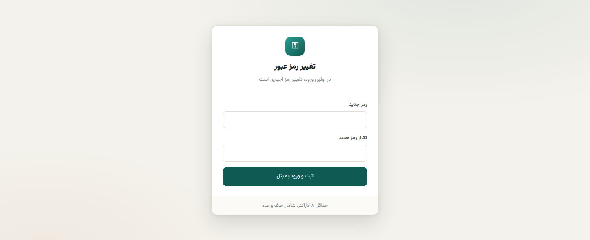
پنل نمایندگیها ۱۱ نما
۴ داشبورد
اولین صفحه بعد از ورود. وضعیت اشتراک، آمار حوالهها، و مهمترین بخش: «مشخصاتی که برای من باز شده» — یعنی هر آگهیای که هزینهاش را داده و شمارهاش را گرفته، اینجا با شمارهی کامل میماند تا دوباره لازم نباشد دنبالش بگردد.
دقت کنید: کارت «بازدید از حوالههای من» فقط عدد نشان میدهد. صاحب آگهی هرگز نمیفهمد چه کسی شمارهاش را دیده — این را عمداً بستیم تا نمایندگیها بیرون از سامانه با هم هماهنگ نشوند.
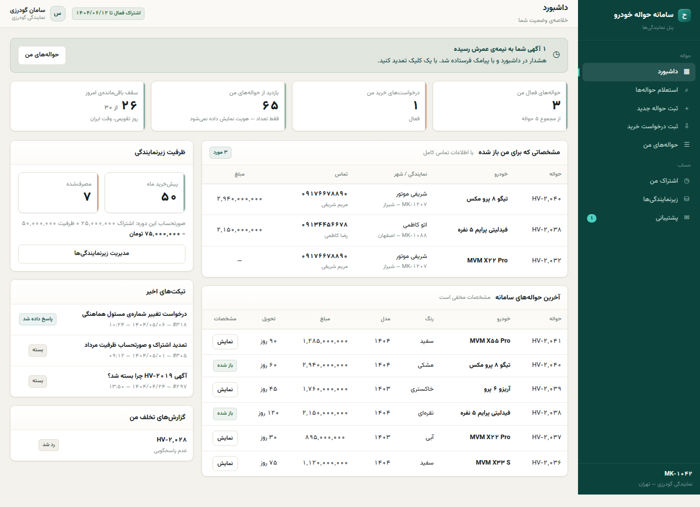
۵ استعلام حوالهها
قلب سامانه. جستجو و فیلتر روی نوع خودرو، رنگ، صلح/وکالتی، شهر، مبلغ و زمان تحویل. سه تب دارد: حوالههای فروش، درخواستهای خرید، و حوالههای من.
دقت کنید: روی هر کارت، کادر «اطلاعات تماس و کد نمایندگی مخفی است» با دکمهی «نمایش مشخصات». دو کارت که قبلاً باز شدهاند، شماره را کامل نشان میدهند. تفاوت این دو حالت را ببینید.
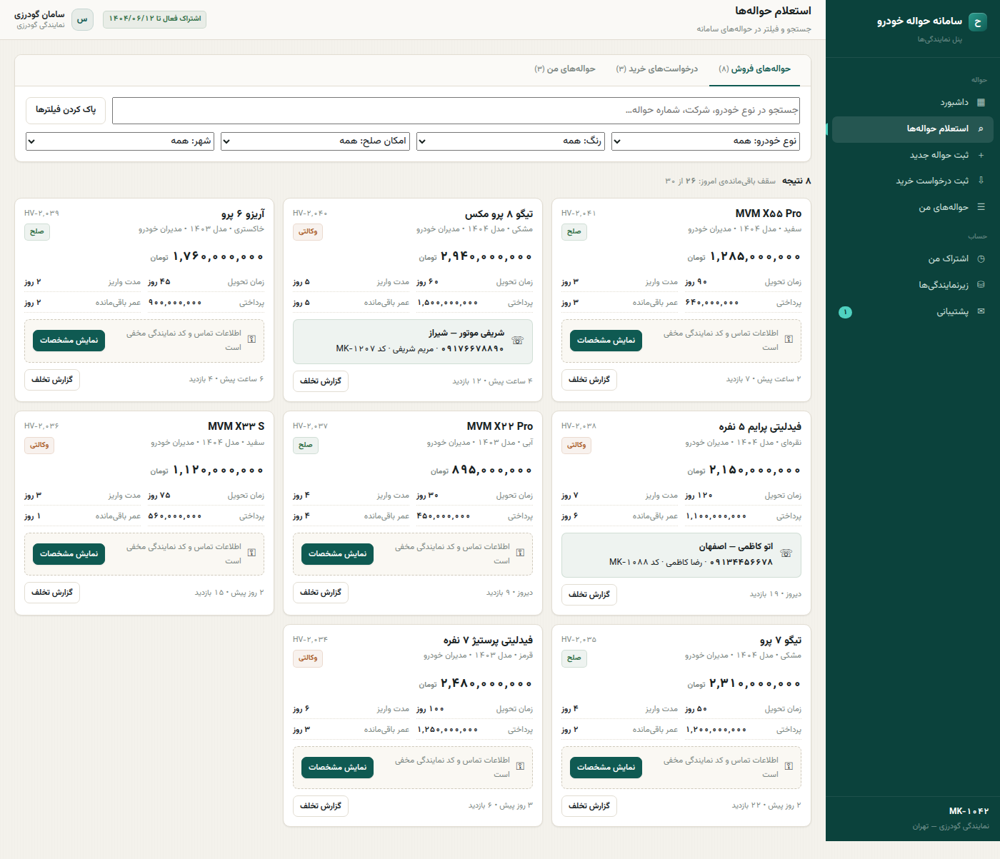
۶ باز کردن مشخصات فروشنده
قبل از باز شدن شماره، این پیام میآید. صریح میگوید که این اقدام ثبت میشود و چقدر از سقف روزانه مانده.
چرا مهم است: همین یک دکمه، هم مدل درآمدی را میسازد و هم گزارشهای پنل مدیریت را. هر آگهی برای هر نماینده فقط یکبار از سقف کم میکند؛ دفعات بعد رایگان است.
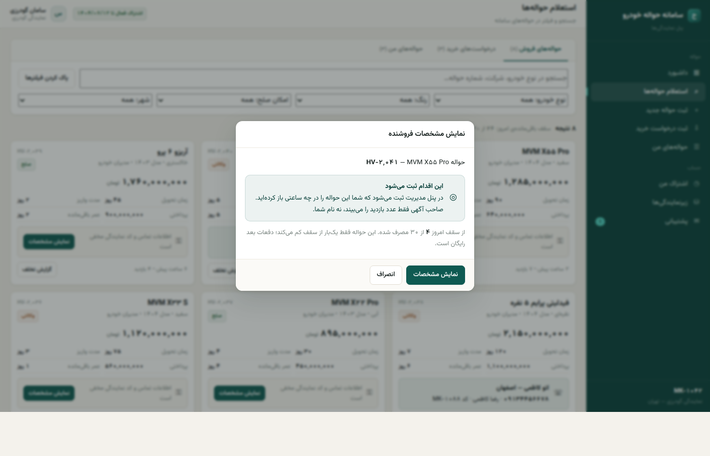
۷ ثبت حواله جدید (فروش)
همهی فیلدها جز توضیحات الزامی است. زیر فیلد مبلغ، عدد را حروفی هم مینویسد تا اشتباه صفر پیش نیاید.
دقت کنید: دو فیلد پایین قفل ۰ دارند — «کد نمایندگی/شهر» و «اطلاعات تماس». نماینده نمیتواند خودش عوضشان کند؛ فقط با تیکت و تأیید ما. اینطور کسی نمیتواند با شمارهی الکی آگهی بزند و بعد عوضش کند.
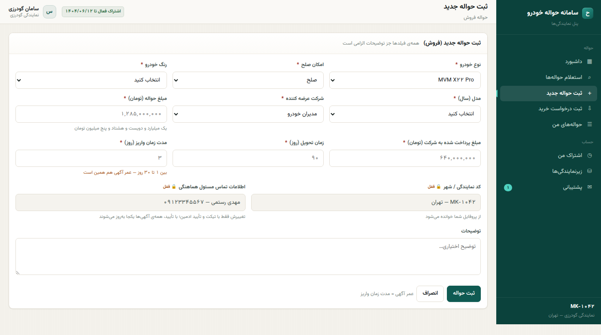
۸ ثبت درخواست خرید
همان فرم، ولی فقط نوع خودرو و صلح/وکالتی الزامی است. کسی که دنبال حواله میگردد لازم نیست همه چیز را بداند.
دقت کنید: اگر رنگ را خالی بگذارد یعنی «هر رنگی قبول» و درخواستش در جستجوی همهی رنگها دیده میشود.
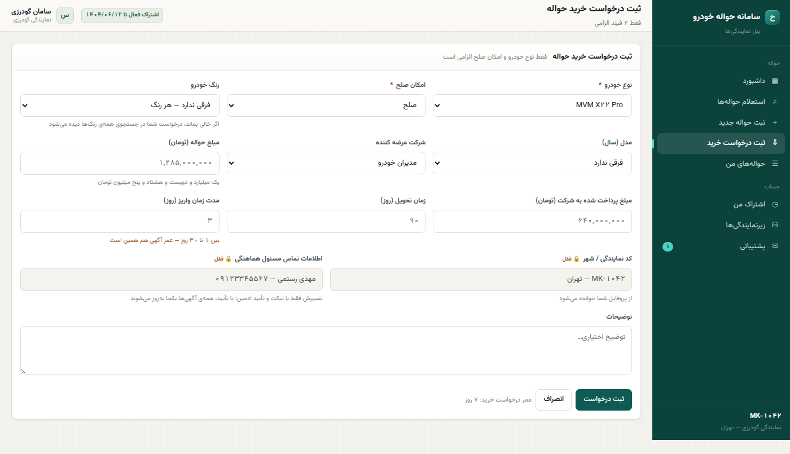
۹ حوالههای من
آگهیهای خود نماینده با وضعیتشان: فعال، منقضی، فروختهشده. عمر هر آگهی برابر «مدت زمان واریز» آن است.
دقت کنید: آگهی منقضی پاک نمیشود؛ با دکمهی «فعالسازی مجدد» برمیگردد. ولی این کار حکم ثبت جدید دارد، پس با اشتراک تمامشده ممکن نیست.
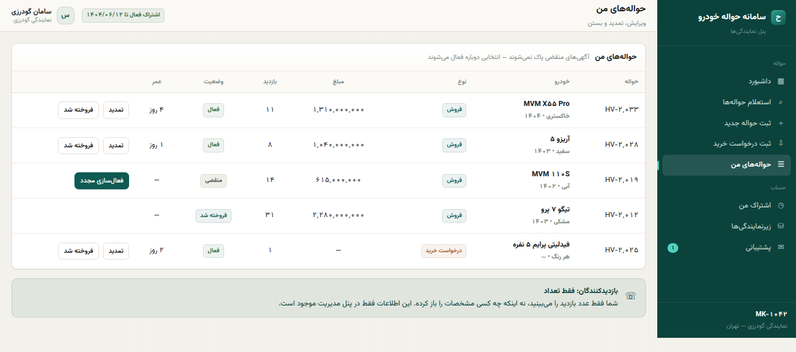
۱۰ زیرنمایندگیها (حالت ماژول)
برای نمایندههای بزرگ. مثال: آقایی با ۵۰ زیرمجموعه. خودش حساب میسازد، تعلیق میکند و رمز ریست میکند — بدون دخالت ما.
عدد مهم: صورتحساب این نماینده = ۲۵ میلیون اشتراک خودش + ۵۰ میلیون ظرفیت = ۷۵ میلیون در هر دوره. ظرفیت پیشپرداخت است، پس تعلیق وسط دوره پول برنمیگرداند.
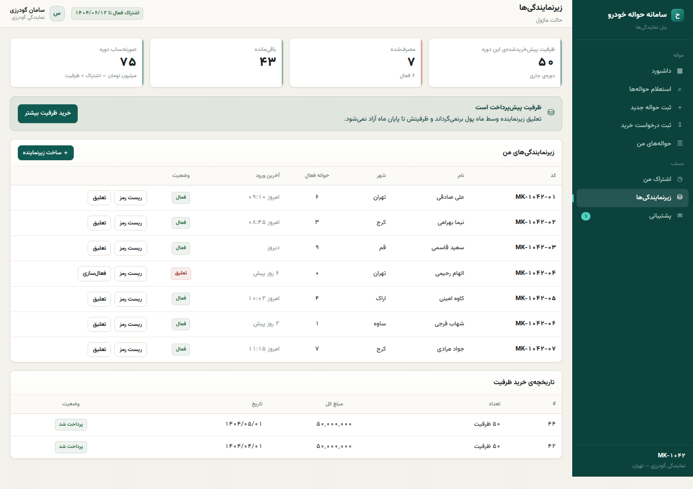
۱۱ تیکتهای پشتیبانی
لیست تیکتها با اولویت و وضعیت.
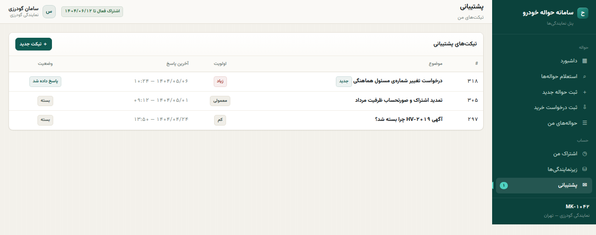
۱۲ گفتوگوی تیکت
نمونهی واقعی: نماینده درخواست تغییر شمارهی مسئول هماهنگی داده. با تأیید ما، شماره روی همهی آگهیهایش یکجا عوض میشود.
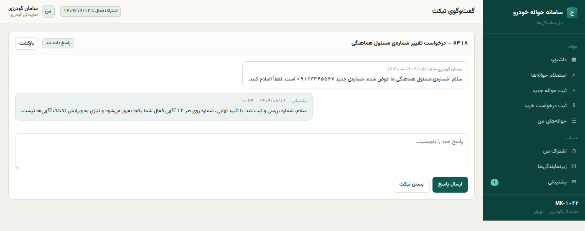
۱۳ اشتراک من
وضعیت اشتراک، ریز صورتحساب، و سقف نمایش مشخصات (روزانه و دورهای). پرداخت دستی است و ما تأیید میکنیم.
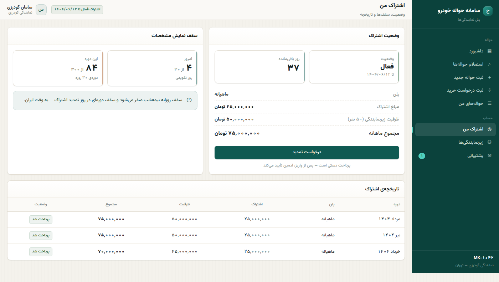
۱۴ وقتی اشتراک تمام میشود
همان صفحهی استعلام، ولی با اشتراک منقضی. این مهمترین نمای این دسته است.
دقت کنید: حوالهها را میبیند — خودرو، مبلغ، مدل، زمان تحویل — ولی هیچ راهی برای تماس ندارد. حتی شمارههایی که قبلاً باز کرده بود هم بسته شدهاند. دکمههای ثبت و تمدید هم غیرفعالند. یعنی سامانه را میبیند ولی نمیتواند از آن استفاده کند — بهترین انگیزه برای تمدید.
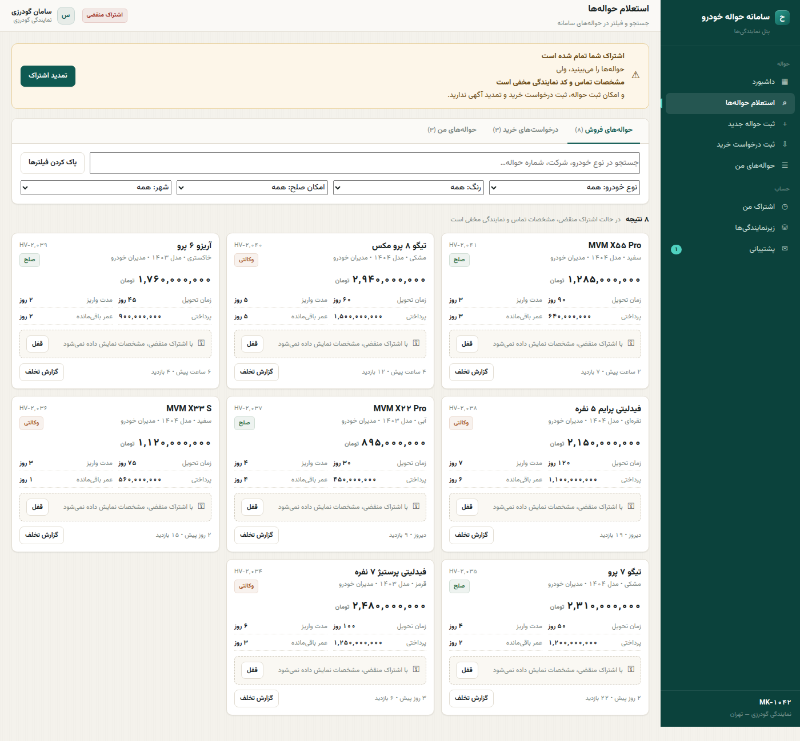
پنل مدیریت (سمت ما) ۱۴ نما
۱۵ داشبورد مدیریت
نمای کلی: نمایندگی فعال و منقضی، حوالههای امروز، گزارشهای تخلف در انتظار، تیکت باز، درآمد دوره، و نمودار روند ثبت حواله.
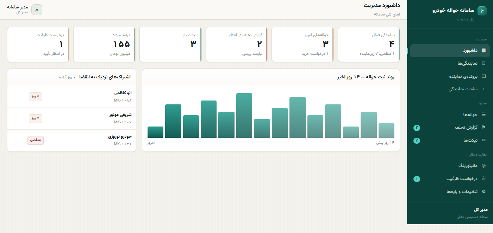
۱۶ لیست نمایندگیها
همهی حسابها با وضعیت اشتراک، تعداد زیرمجموعه و تعداد حواله. از همینجا میشود نشست کاربر را به زور بست.
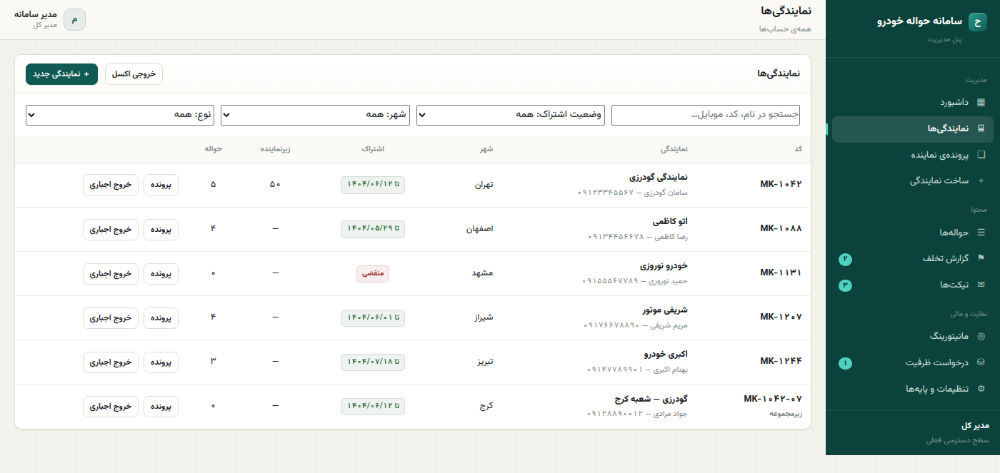
۱۷ ساخت نمایندگی
اطلاعات حساب، پلن اشتراک، سقف اختصاصی نمایش، و کلید روشن/خاموش «حالت ماژول».
دقت کنید: سقف روزانه و دورهای برای هر حساب جداگانه قابل تنظیم است — نه فقط روی پلن.
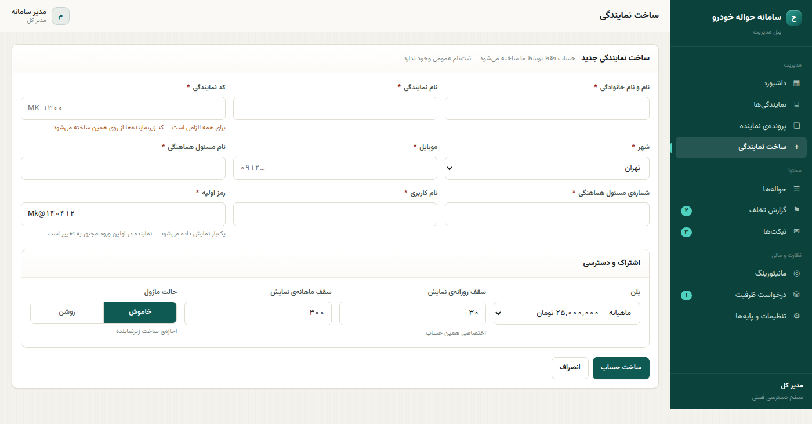
۱۸ پروندهی یک نماینده
همه چیز دربارهی یک حساب در یک صفحه: آمار، تایملاین فعالیت با IP، وضعیت اشتراک و لیست زیرمجموعهها.
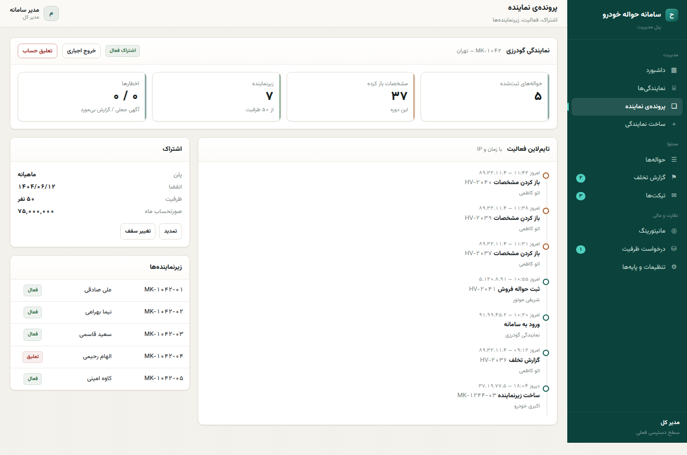
۱۹ مدیریت حوالهها
همهی آگهیهای سامانه با فیلتر کامل. ستون «گزارش» نشان میدهد کدام آگهی گزارش تخلف خورده.
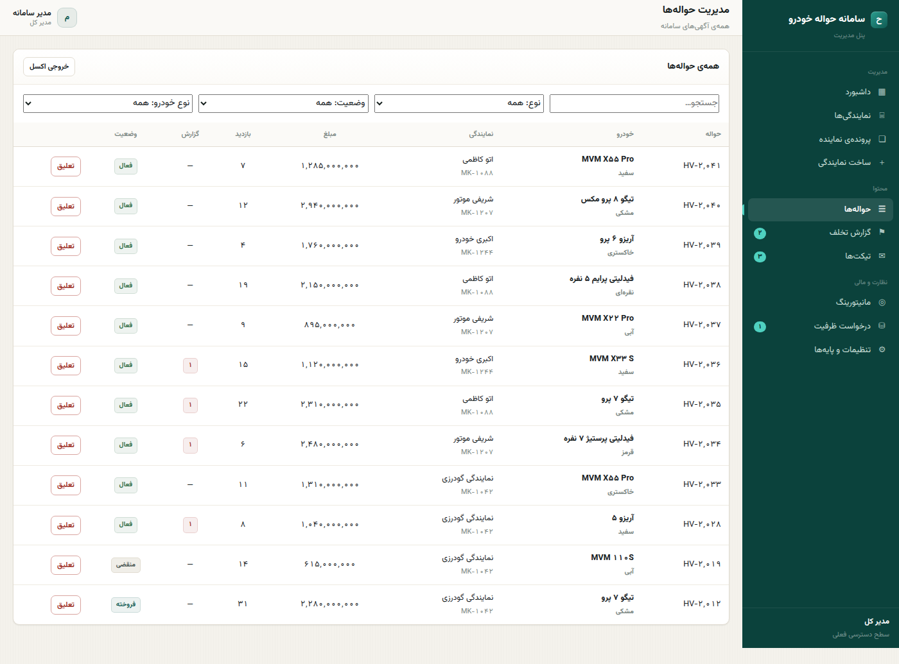
۲۰ گزارش تخلف — صف و بررسی
صف گزارشها و صفحهی صدور حکم. سیستم سابقهی هر دو طرف را کنار هم میگذارد تا معلوم شود کدامیک بدسابقه است.
مکانیزم ضد سوءاستفاده: چهار حکم داریم. «تخلف تأیید شد» به آگهیدهنده اخطار میدهد، «گزارش بیمورد» به گزارشدهنده. یعنی هم جلوی آگهی فیک را میگیرد، هم جلوی ریپورت الکی رقبا. با ۳ اخطار حساب تعلیق میشود.
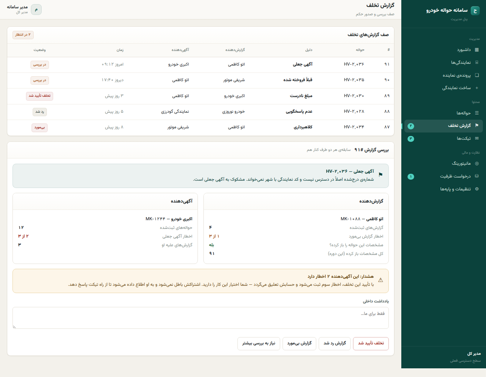
۲۱ تیکتها (سمت ما)
صف تیکتها. تیکتهای «تغییر اطلاعات تماس» جدا برجسته میشوند چون تأیید ما را لازم دارند.
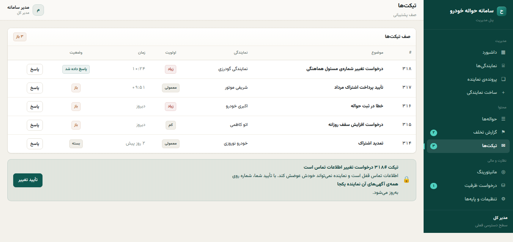
۲۲ مانیتورینگ فعالیت
تایملاین کل سامانه: چه کسی، چه کاری، چه ساعتی، با چه IP. کنارش جدول «چه کسی چند مشخصات دیده».
دقت کنید: نوار قرمز بالای صفحه یک نماینده را علامت زده که ۹۱ بار مشخصات باز کرده ولی فقط ۳ حواله ثبت کرده — الگوی مشکوک جمعآوری دیتا. سیستم خودش این را برجسته میکند.
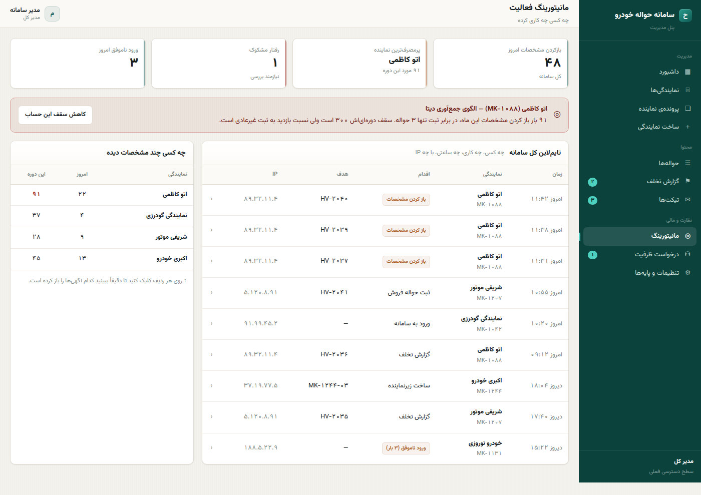
۲۳ جزئیات یک رویداد
با کلیک روی هر ردیف تایملاین، پروندهی کامل باز میشود — با یک جملهی فارسی که دقیقاً میگوید چه اتفاقی افتاده.
نکتهی حقوقی: لاگ خودِ شمارهای که آن لحظه نشان داده شد را ذخیره میکند، نه شمارهی امروز. چون شمارهها قابل تغییرند، بدون این کار در دعوای «شما شمارهی اشتباه دادید» هیچ مدرکی نداشتیم.
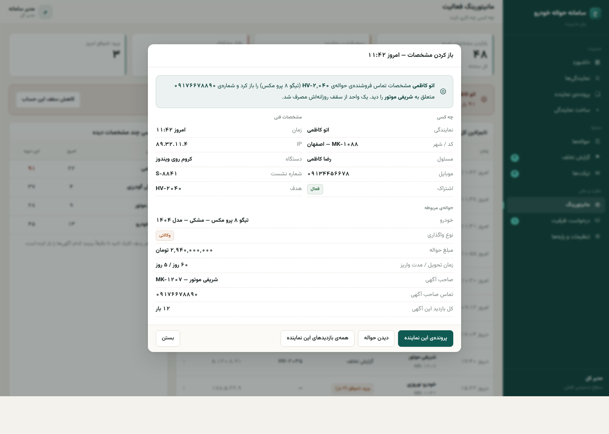
۲۴ کدام آگهیها را باز کرده؟
با کلیک روی هر نماینده در جدول آمار، فهرست دقیق آگهیهایی که مشخصاتشان را دیده میآید — با شماره، زمان و IP.
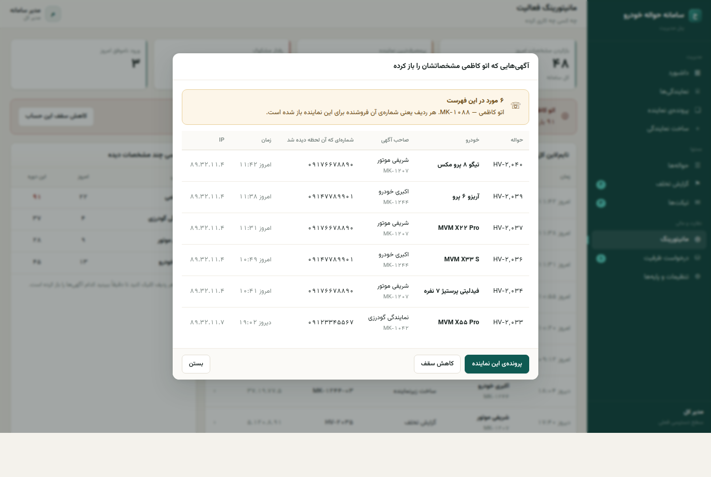
۲۵ درخواست خرید ظرفیت
وقتی نمایندهی بزرگ ظرفیت زیرمجموعه میخرد، درخواستش اینجا میآید و بعد از دریافت پول تأیید میکنیم.
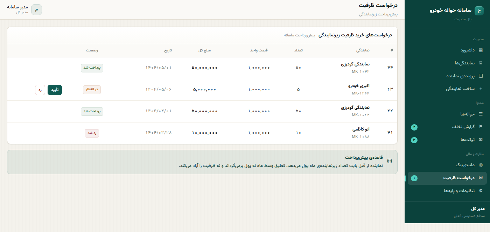
۲۶ تنظیمات و پایهها
قیمتها، سقفها، آستانهی اخطارها، لیست خودروها و شهرها — همه از پنل قابل تغییرند، بدون نیاز به برنامهنویس.
دقت کنید: فعلاً فقط «مدیران خودرو» در لیست شرکتهاست، ولی ساختار طوری است که هر وقت خواستید شرکت جدید اضافه کنید.
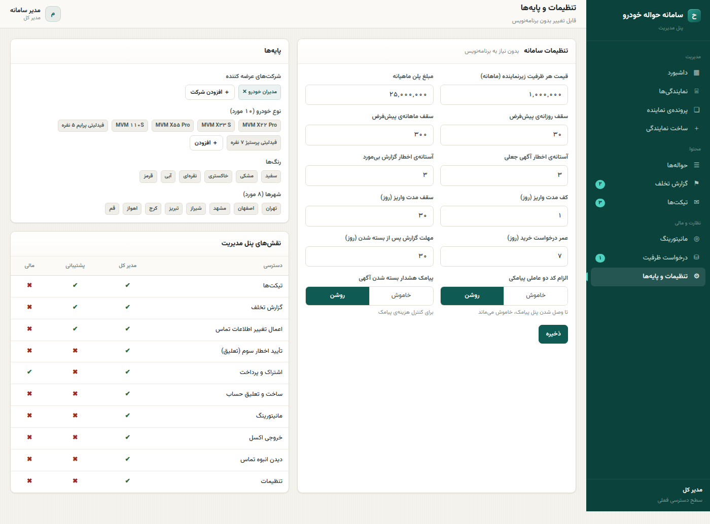
۲۷ نقش پشتیبانی — محدودیتها
پنل مدیریت سه سطح دارد: مدیر کل، پشتیبانی، مالی. این همان صفحهی گزارش تخلف است، ولی از دید کارمند پشتیبانی.
دقت کنید: کادر زرد میگوید چون پشتیبانی حق تعلیق حساب ندارد، اخطار سوم به صف تأیید مدیر کل میرود. همچنین آمار کامل بازدید طرفین را نمیبیند، فقط اینکه آیا این شخص مشخصات همین حواله را باز کرده یا نه.
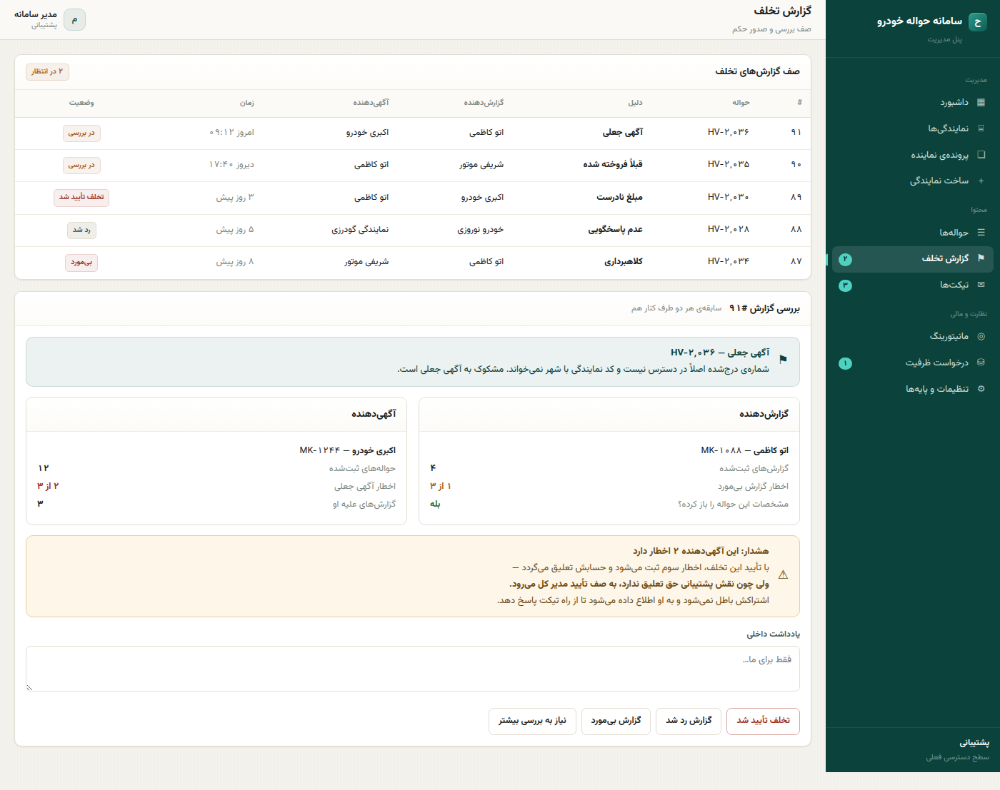
۲۸ دسترسی ندارید
وقتی پشتیبانی سراغ مانیتورینگ میرود. خروجی اکسل و دیدن انبوه شمارهها فقط مال مدیر کل است.
چرا مهم است: کل دارایی این کسبوکار همان دیتای تماس است. اگر فردا کارمند پشتیبانی بگیریم، نباید بتواند یکجا خروجی بگیرد و برود.
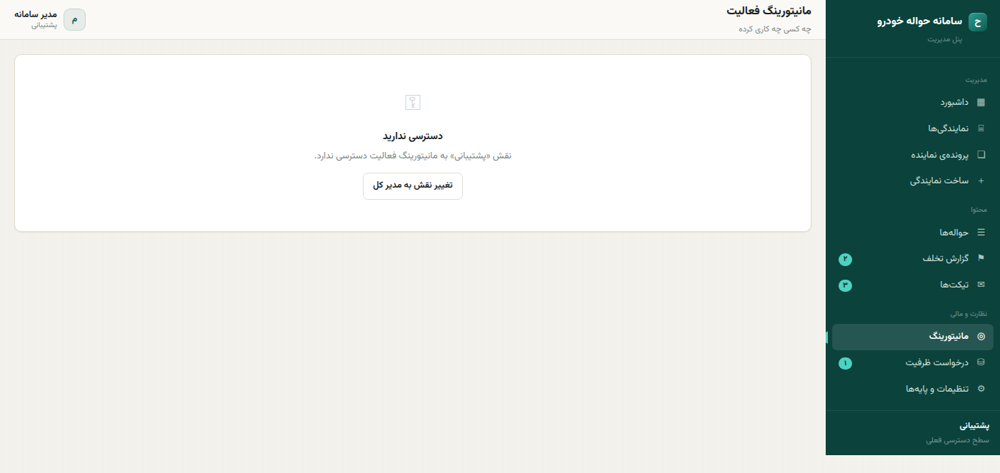
نظر شما را روی اینها میخواهیم
- آیا فرم ثبت حواله چیزی کم دارد؟ فیلدی هست که نمایندگیها واقعاً لازم دارند و ما ندیدهایم؟
- مدل «مشخصات مخفی + دکمهی نمایش» برای بازار جواب میدهد، یا نمایندگیها اذیت میشوند؟
- عمر آگهی برابر «مدت زمان واریز» است. با عرف بازار میخواند؟
- سقف ۳۰ مورد در روز برای دیدن مشخصات، کم است یا زیاد؟
- اسمها و کلمهها درستاند؟ («حواله»، «امکان صلح»، «مسئول هماهنگی»، «استعلام»)
- هر چیزی که به چشمتان غلط یا گیجکننده آمد.